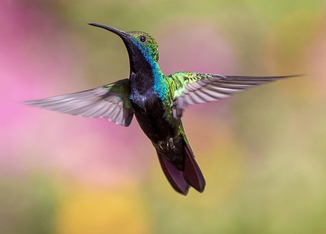
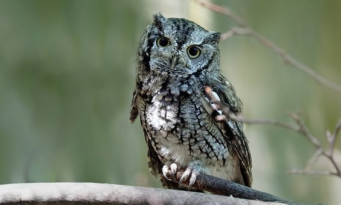
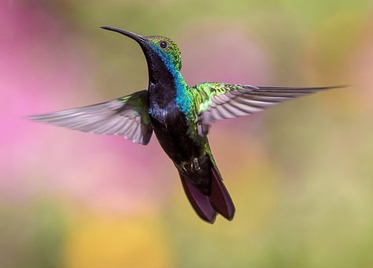
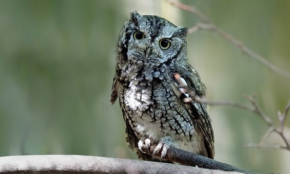
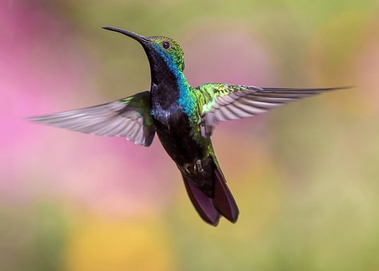
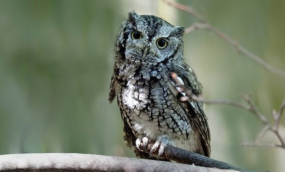

<
 




>
navigations 의 수를 누르면 해당 수와 동일한 위치의 이미지만 화면에 보이게 하세요!
next 와 prev 버튼을 누르면 해당 이미지의 다음과 이전 이미지만 보이게 하세요!


navigations 의 수를 누르면 이미지 번호의 이미지가 중앙에 오도록 하세요!
next 와 prev 버튼을 누르면 이전과 다음 이미지가 중앙에 오도록 하세요!z